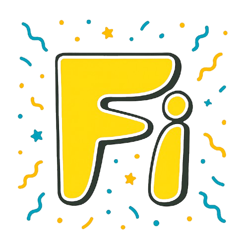

FI Fish Chips
100% Organic | Crunchy | Spicy | Healthy
100% Organic | Crunchy | Spicy | Healthy

FI Fish Chips is near of you with an innovative snack experience combining the nutritional benefits of freshwater fish with irresistible flavors. Our chips design mainly based on premium Puntius fish, carefully processed to preserve their natural goodness while delivering exceptional crunch. Each bite will offer a perfect balance of health and taste, making them ideal for health-conscious snack lovers who don't want to compromise on flavor.
.png)
Plan to crispiness with the punch of real garlic. 100% organic and irresistibly delicious!
Our Garlic Flavor Fish Chips will craft with freshly crushed garlic and a blend of aromatic herbs that create a bold yet balanced taste profile. The garlic can be slow-roasted to perfection before being incorporated into our special seasoning mix, ensuring a deep, rich flavor without overpowering the natural taste of the fish.
.png)
The packaging for our Garlic Flavor is designed to preserve freshness while being environmentally conscious.
.png)
Tangy and tasty tomato burst with every bite. Perfect for snack time!
The Tomato Flavor Fish Chips feature sun-ripened tomatoes.
.png)
Our Tomato Flavor packaging stands out with its vibrant red design, making it easy to spot on shelves. The portion-controlled packs help with mindful snacking. These chips will school-safe (nut-free) and make an excellent alternative to traditional potato chips for those seeking more nutritional value from their snacks.
.png)
Smoky, savory, and crunchy. Barbecue chips a bold twist!
The Barbecue Flavor Fish Chips will deliver a smoky, slightly sweet taste with just the right amount of heat. It can be used a special blend of paprika, onion powder, and natural smoke flavor to create that authentic barbecue taste. Unlike traditional barbecue snacks that can be overly salty, our version will maintains a balanced flavor profile that lets the quality of the fish shine through.
.png)
The Barbecue Flavor package designed in eye-catching that promises adventure for your taste buds. We've designed the bag to be sturdy enough to prevent crushing while being lightweight for easy carrying. Either way, we have to plan to you getting a snack that's high in protein and low in empty calories compared to conventional chips.
Craft with care and inspired by coastal freshness. At the heart of every bite will Puntius fish, a small yet flavorful freshwater catch known for its tender texture and rich taste. Source sustainably, these fish are cleaned, filleted, and transformed into golden, crispy delights.
We have intent to fry our chips in pure sunflower oil, ensuring a light and healthy crunch that does not weigh you down.
Garlic Glaze: Rich, roast garlic with a hint of lemony zing.
Tomato Zest: Tangy sun-dried tomato with a subtle herby note.
Smoky BBQ: Deep, smoky spices with a touch of sweetness and fire.
To boost both taste and nutrition, we try to sprinkle in a blend of healthy spices such as turmeric (anti-inflammatory), black cumin (kalonji) for its antioxidant kick, and a dash of moringa powder for a superfood twist.
This proposed green economy initiative focuses on reducing plastic waste in the chips packaging process by introducing biodegradable tissue paper as an alternative to conventional polythene packaging. The project aims to minimize environmental pollution, decrease dependence on non-renewable plastic materials, and promote sustainable consumption practices.
The implementation of tissue paper packaging can significantly reduce the amount of single-use plastic entering landfills and water bodies. Tissue paper is biodegradable, recyclable, and produced from renewable resources, making it a more environmentally friendly option.
The initiative will encourage manufacturers to adopt eco-friendly packaging technologies while maintaining product quality and hygiene standards. In the long term, this transition can strengthen corporate sustainability, improve brand reputation, create opportunities for green employment, and contribute to the development of a circular economy.
Overall, replacing conventional polythene with tissue paper in the chips packaging process represents an innovative and practical step toward achieving environmental sustainability and supporting green economic development.